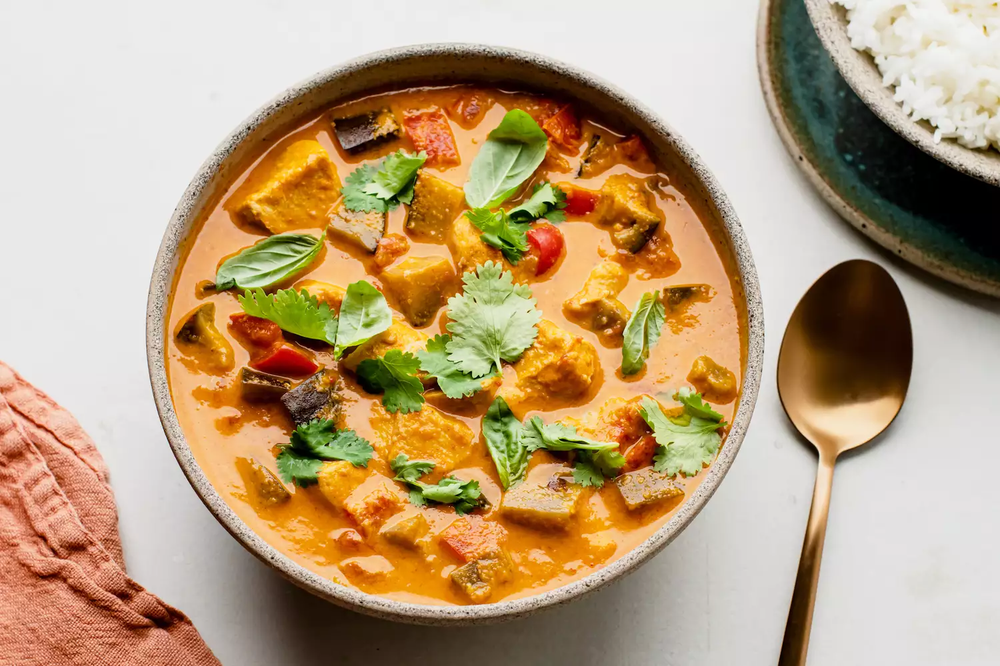

Thai Red Curry

Sumptuous & Savory with fiery spiciness
Thai red curry is a popular dish originating from Thailand, known for its bold and spicy flavor. It is made by simmering red curry paste, coconut milk, and various ingredients such as meat (chicken, beef, or tofu), vegetables, and Thai basil, in a sauce. The red curry paste, which is the base of the dish, is made from a blend of chili peppers, shallots, garlic, lemongrass, and other spices, giving the curry its distinct heat and complexity.
Ingredients:
- 1 pound boneless chicken breasts, cubed
- 1 red bell pepper, chopped
- 1 cup cherry tomatoes, halved
Red Curry Sauce:
- 1 can coconut milk
- 2 to 3 tablespoons fresh lemongrass, minced
- 1 shallot, sliced
- 1 thumb-size piece ginger, grated
- 4 to 5 cloves garlic
- 1 to 2 fresh red chili peppers, sliced
- 2 tablespoons tomato puree
- 2 tablespoons fish sauce
- 2 tablespoons chili powder
- 1/2 teaspoon ground cumin
- 1/2 teaspoon ground coriander
- 1 tablespoon brown sugar
- 1 teaspoon shrimp paste
- 2 tablespoons fresh lime juice
Steps
- Preheat oven to 350 °F.
- Set cubed chicken in a large casserole dish.
- Blend all curry sauce ingredients in a food processor.
- Add curry sauce to casserole dish with chicken.
- Cover and bake 45 minutes.
- Remove dish from oven and add the bell pepper and tomato, stirring gently.
- Return curry to oven for 15 to 20 minutes (or until chicken and veggies are well cooked.)
- Transfer curry into a large serving bowl, garnish with fresh basil and coriander, and serve with thai jasmine rice.
Home